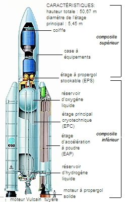

MENU
fusee

Une fusée ne va pas “tout droit dans l'espace ”. Elle monte d'abord verticalement, puis s'incline progressivement pour prendre de la vitesse horizontale.
Pour rester en orbite autour de la Terre, il faut aller très vite : environ 28 000 km/h en orbite basse.
- Éjection du gaz : Le gaz sort par une tuyère à très grande vitesse.
- Poussée
L’éjection du gaz crée une force dans le sens inverse → c’est la poussée qui fait avancer (ou monter) la fusée.
- Les parties principales d’une fusée
Étages : sections empilées, chacune avec son propre moteur et son carburant, qui se détachent lorsqu’elles sont vides pour alléger la fusée.
- Moteur : brûle les ergols et produit la poussée.
- Réservoirs : contiennent le carburant et l’oxydant.
- Charge utile : satellite, capsule habitée, matériel scientifique…
- Coiffe : protège la charge utile pendant l’ascension.

Frise chronologique des fusées
- Premiers feux d’artifice et fusées à poudre noire.
- Usage : cérémonies et guerre (flèches propulsées).
13ᵉ siècle – Chine & Europe
- Développement des fusées militaires.
- Introduction en Europe des armes à poudre.
17ᵉ‑19ᵉ siècle – Science naissante
- Konstantin Tsiolkovski (1857‑1935, Russie) : théorie de la fusée et équation fondamentale.
- Idée de la fusée à plusieurs étages.
- Robert Goddard lance la première fusée à carburant liquide.
1930‑1945 – Seconde Guerre mondiale
- V-2 (Allemagne) : première fusée balistique moderne.
- Wernher von Braun : conception de fusées puissantes pour l’espace.
- Spoutnik 1 : premier satellite artificiel.
- Vostok 1 : Youri Gagarine, premier homme dans l’espace.
- Apollo 11 (Saturn V) : premier alunissage.
- Navette spatiale : fusée réutilisable pour astronautes et satellites.
2000‑aujourd’hui – Monde moderne
- Falcon 9 (SpaceX) : fusée réutilisable à grande échelle.
- Ariane 5 / Ariane 6 (Europe) : satellites commerciaux et missions scientifiques.
- SLS / Starship : fusées pour Lune et Mars.
Début du tourisme spatial et exploration commerciale.